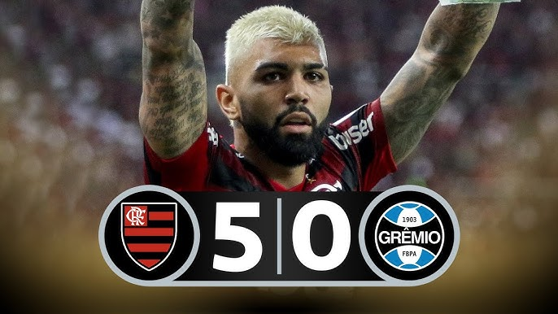

A campanha histórica do Flamengo
O Flamengo protagonizou momentos históricos em sua trajetória recente. Um dos mais marcantes foi a goleada por 5 a 0 sobre o Grêmio na semifinal da Libertadores de 2019, no Maracanã.
Outra vitória inesquecível foi sobre o River Plate, na final da Libertadores, quando o Mengão virou o jogo com dois gols de Gabigol e conquistou a América após 38 anos.
Essas partidas consagraram uma geração vitoriosa e mostraram o poder do elenco rubro-negro em grandes decisões.
